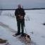

Tietokirjailija ja viestintävalmentaja, viestintätoimisto Kaiku Helsingissä partnerina työskentelevä Jouko Marttila ihmettelee blogissaan niitä, jotka valitsevat työttömyyden tarkoituksella.
- Usein kuulee väitteen, että kukaan ei ole työtön tahallaan. Itse asiassa yhä useampi taitaa olla.
- Työnkarttajien joukko kasvaa, Marttila kirjoittaa.
Marttila antaa blogissaan esimerkkejä työnkarttajista. Yksi heistä on Ylen haastattelema Mervi Venäläinen, jonka tarina herätti viime viikolla ihmetystä.
Sosiaali- ja terveysministeriön hallitusneuvos Esko Salo sanoi Uudelle Suomelle, että Venäläisen tapauksen ei pitäisi olla mahdollinen. Venäläinen ei halua vastaanottaa hoitoalan töitä, joihin hänellä on koulutus, mutta on silti oman kertomansa mukaan ansiosidonnaisella.
LUE LISÄÄ: Työttömän Mervin tarina ihmetyttää: ”Näin ei voi menetellä”
Jouko Marttilan mielestä kyseessä on iso ongelma, jos ihmiset valitsevat työttömyyden.
- Suomi on todellisessa hädässä, jos työttömyys koetaan paremmaksi vaihtoehdoksi kuin työn tekeminen. Edes sen pohtiminen ei pitäisi olla mahdollista, että voisi vaihtaa työnsä joutenoloon yhteiskunnan kustannuksella, ei edes 400 päivän ajaksi.
- Työttömiä tulee joka päivä lisää. Työttömiä maahanmuuttajia tulee joka päivä lisää. Jos tähän päälle tulee vielä paljon Mervin kaltaisia työnkarttajia, niin kuuden euron pitsat ja harmaa talous alkavat olla yksi pienimpiä ongelmiamme, Marttila kirjoittaa.
Kommentit
Hiphei! Taas tällaista mutu-pohjaista työttömien mollausta ilman minkäänlaista fakta- tai tutkimuspohjaa. Mutta sitähän tämä nykyaika on: puhetta ilman faktoja. Jopa hallitus jatkaa omilla "faktoillaan" pelottelua, vaikka ne on moneen kertaan todistettu vääriksi.
Juu taas YKSI hyvä esimerkki. Hiljan oli 25v opiskelija TATU.
Tänäänkin taas työtä vieroksuvia sanotaan irti 295 ja mikä oli eilinen irtisanomis -saldo.
Leikattuja ansiosidonnaisia saavia näköjään laiskottaa.
Ideologia on paljon läpitunkevampaa kuin faktat. ;)
Tuskimpa on fuulaa tämä. Jos minun tuttavapiirissä on kolme jotka tietoisesti laistavat duunia koska ansiosidonnainen on niin hyvä että kannattaa pitää sapattia ja matkustella. Nykyjärjestelmä ei ole työhön kannustava ja sitä pitäisi leikata varsin radikaalisti jotta työn vastaanotto olisi kannattavaa.
Nyt se on tutkittu: Sosiaaliturva ei tee ihmisestä töitä karttavaa laiskuria.
http://www.talouselama.fi/uutiset/nyt-se-on-tutkittu-sosiaaliturva-ei-te...
Tästä artikkelista ei todellakaan voi päätellä onko se fuulaa vai ei, koska mitään faktoja tai edes laadullista analyysiä siinä ei esitetä. Ainoa asiaan liittyväkään lausahdus on sisällöltään; 'mun mielestä asia taitaa olla noin', joka on sellaisenaan täysin arvoton.
Ei faktaa? Eli sinun mielestäsi YLEn haastattelema "työtön " Mervi oli mielikuvitushahmo?
Mervin jutussa vain jäi kertomatta että hän oli ollut päätöksensä johdosta karenssissa 3kk saamatta kelalta mitään. Tarina ei kerro elikö hän sitten säästöillään, vai marssiko sossun luukulle. Kertomatta jäi myös että jos hän kieltäytyy uudesta työtarjouksesta, hänelle napsahtaa uusi sanktio päälle.
Siispä tarina Mervistä, joka loisii ansiosidonnaisella, taiteellista puoltaan etsien, on täyttä fuulaa. Todellisuudessa Mervi joko käyttää säästöjään, tai elää todella vaatimattomasti, ja työtarjouksesta kieltäytyminen tarkoittaa automaattisesti minimielintasolla elämistä, ellei sitten loisi messevillä pääomatuloilla.
Jos sinulle on ongelma että (työstäkin kieltäytyville) työttömille tarjotaan minimielintaso, eikä sallita minkään sortin säästöjä, täytyy kysyä että mitä työttömille pitäisi mielestäsi tehdä? Heittää uuniin? Hirttää kuten 1800-luvun Englannissa(silti työttömiä riitti sielläkin)? Pakottaa keksittyihin julkisiin höpöhöpötöihin, kuten Neuvostoliitossa? Antaa riutua nälässä ja katsella kun yhteiskunnan segregaatio räjähtää käsiin ja valtavan suuri epätoivoinen ihmismassa uhkaa yhteiskuntarauhaa niin että "tavallisten" ihmisten täytyy rakentaa muureja kotiensa suojiksi?
"Hän on oman kertomansa mukaan ansiosidonnaisuudella"
Mitä muuta kohtaa tarinassa et tajunnut, Jyrki Paldan? Yleisenä ohjeena kehoitan sinua lukemaan jutun ennen kuin ryhdyt satuilemaan hirttämisistä, uunista jne.
Hän on päässyt ansiosidonnaiselle kolmen kuukauden karenssin jälkeen, koska irtisanomisesta seurannut karenssiaika päättyi, eikä hänelle ole oletettavasti sen jälkeen tarjottu töitä. On periaatteessa mahdollista että töitä on tarjottu ja virkamies on jostain syystä tulkinnut karenssin aiheettomaksi työstä kieltäytymisestä huolimatta, mutta lähtökohtaisesti työtarjouksesta kieltäytymisestä napsahtaa aina karenssi päälle. Paljon todennäköisempää on että töitä ei ole tarjottukaan. Sitä ei artikkelissa mainita.
Se "satu" uuneista tai hirttämisistä ei ollut kertomus, vaan kysymys. Nykyisen lainsäädännön silmissä on käytännössä mahdotonta elää ansiosidonnaisella ja kieltäytyä oman alan työtarjouksista. Miniturvalla voi(kunhan on varaton), ja jos kerran asiaan täytyy saada muutos(työttömän kannalta "kannustavampaan" suuntaan), niin millainen muutos sen pitäisi olla?
Kukaan tuskin haluaa olla työtön, mutta työn organisoimiselle ei ole muita malleja, kun odottaa uutta paikkaa, ryhtyä yrittäjäksi tai päästä pätkätyöläiseksi työllistämistöihin.
Wikimploi on työn organisoinnin mekanismi, jota TEM ja kaupungit voivat käyttää heti. Siinä tyhjät toimitilat täyttyvät työttömistä ammattilaisista. He itseorganisoivat työtä keskenään, ja se on siinä.
- https://wikimploisuomi.wordpress.com/hyodyt/
Juhani Risku, Trondheim
Ongelmaa tehdään, näiden erilaisten "huuhaa" tietäjien ja muiden joutotyyppien "mutujen" pohjalta.
On mennyt työelämä sen verran erikoiseksi, että siellä moni kertakaikkiaan palaa loppuun. Suomesta ollaan rakennettu ja ollaan rakentamassa, sellainen amerikkalaistyylinen ihannemaa yrityksille - suurille sellaisille, jossa työntekijällä ei ole mitään muuta arvoa, kuin tuottaa mahdollisimman suurta voittoa yritysten omistajille, jotka sitten ohjaavat nekin veroparatiiseihin.
Jatkuvasti kasvava osa ihmnisistä, haluaa tuosta hullunmyllystä eroon, ja se on jo systeeminäkin tuhooh tuomittu, sillä se toimii vain matalan koulutustason maissa, eli ei Suomessa eikä länsi-Euroopassa oikein muutenkaan.
No USA: vähän kovempi työtahti kuin Suomessa. Myös lomat on ihan eri ääripäissä. Suomessa tuntuu, että julkinen sektori alkaa palamaan loppuun kun heiltä aletaan vaatia samaa työtahti kuin yksityiseltä sektorilta . Valtion ja kuntien työntekijät ovat tottuneet löysempään työtahtiin.
Verotus Suomessa on ihan pielessä, yritykset saavat melkein saman verran tukia (n. 4 miljardia euroa) kuin maksavat yhteisöveroa (4,4 miljardia euroa). Myös maataloustuet ovat järjettömiä, 4-5 miljardia euroa.
Tietääkseni maataloustuki oli viime vuonna 2,1 miljardia, josta EU maksoi 0,9 miljardia. Työttömyyskorvaukset olivat suunnilleen 5 miljardia ja nousevat tänä vuonna varmaan 6 miljardiin.
Väärin, kansallinen maataloustuki oli 2,1 miljardia euroa, EU:n maataloustuki oli 0,9 miljardia euroa. Sitten tulee vielä maajussien eläkkeet, lomittajien palkkatuet jne. Sekä EU:n tullisuojan jotka eivät ole mitään muuta kuin tukea. Yhteensä 4-5 miljardia euroa.
http://liberalismi.net/wiki/Maataloustuet
http://m.taloussanomat.fi/kotimaa/2010/08/03/professori-maataloudelle-mi...
Esim. Suorien yritystukien määrä on noin 1 miljardia euroa, mutta erilaisia verotukia on vajaa 3 miljardia euroa. Eli yhteensä yritystukia on noin 4 miljardia euroa.
Yhteisöveron tuotto oli vuonna 2013 vain runsaat 4,4 miljardia euroa.
Valtiolle tulisi halvemmaksi säätä yhteisövero 0% ja lopettaa kaikki yritystuet ja maataloustuet.
Ihan vain tiedoksi, että Suomessa voidaan antaa sitä karenssi jos kieltäytyy tarjotuista töistä ja jos sitä tekee jatkuvasti, niin sekä ansiosisonnainen päiväraha ja peruspäiväraha voidaan evätä kokonaan pois. Tämä tosin on yksittäisen virkailijan hallussa.
Toki tämänkin jälkeen jää oikeus sossuntukeen jos ei ole omaisuutta, mutta jos on vaikka kiinteistö, oli se sitten kerrostalon huoneisto tai mummonmökki, niin sossu voi ensin käskeä myymään sen.
Suomessa vain on niin helppoa käyttää näitä tukia hyväksi jos tuntee järjestelmän. Ansiosidonnaisen päivärahan pitäisi lähteä heti jos kieltäytyy töistä. Sitten jos ei vieläkään kiinnosta, niin lähtee peruspäiväraha.
Sen lisäksi ansiosidonnaista päivärahaa pitäisi saada käyttää vain sellaiseen opiskeluun, millä alalla on mahdollista työllistyä ja työvoimalle on tarvetta. Korkeakoulutkin on täynnä tutkintoja joista on jo vuosia valmistuttu suoraan kortistoon.
Sossu, Kela ja TE-toimistot pitäisi myös yhdistää yhdeksi virastoksi.
Miksi muka olisi jokin pyhäinhäväistys myöntää se, että on olemassa lintsareita, sosiaalipummeja ja valehtelijoita? Suomeen luotu "hyvinvointivaltio" tekee mahdolliseksi vastikkeettoman rahan varastamisen yhteisestä kassasta, ja pieni mutta aivan todellinen vähemmistö käyttää sitä röyhkeästi hyväkseen, sanoivatpa poliittiset ideologiat asiasta mitä hyvänsä.
Aika lailla samasta syystä kuin on pyhäinhäväistys myöntää että omistajat ja sijoittajat vain riistävät työtätekeviä loisimalla heidän tuottamalla lisäarvollaan, vieläpä elellen superleveästi miljardihuviloissansa ja satojen metrien huvipaateissaan.
(jep, juuri siksi että se on propagandistinen puolitotuus)
Valintija on monia,joku sanoo pärjäävänsä pienemmilläkin tuloilla.Kyseessä voi olla myös loppuun palaminen,huonojen työolojen takia tai liian yrittämisen.
Tottakai työtä vieroksuvia on joukossa – ja muuten tulee aina olemaankin ja heitä on aina ollut.
Se, että lietsotaan tällaista työttömiä mustaavaa ilmapiiriä, ei hyvää lupaa mustavalkoisessa keskustelukulttuurissamme, joka tulkitsee herkästi tämänkin "uutisen" niin, että kaikki tai lähes kaikki työttömät ovat sitä omasta halustaan.
Toinen asia on se, että maassa on valtavasti väkeä jotka tekevät töitä ilman palkkaa, jolloin heidät luetaan työttömiksi. Mielestäni työ ja sen aikaansaannokset ovat olennaisia – ei raha ja palkka. Toimeentulo on sitten oma asiansa, joka ajattelussamme pyritään aina kytkemään palkkatyöhön.
Järkevästi toteutettu perustulo ratkaisisi ainakin osan toimeentulo-ongelmista – virallista palkkatyötä kun ei tule riittämään läheskään kaikille, vaikka sellaista haihattelua kuulee virallisilta ja epävirallisilta tahoilta aivan yleisesti ja vakavissaan esitettynä.
Koko ajattelu työstä, palkasta ja toimeentulosta pitää uudistaa maailman muuttumisen mukana, eikä jämähtää fiktiiviseen menneisyyteen, jolloin palkkatyötä oli tarjolla kaikille. Erityisesti pitää uudistaa tulontasaus.
Kun kaikille ei riitä nyt töitä eikä tule tulevaisuudessakaan riittämään, mitä haittaa, jos työttömien joukossa olisi henkilöitä, jotka kokevat pärjäävänsä minimitoimeentulolla eivätkä kaipaa töihin? Onhan tuo esimerkin Mervikin halukas töihin, mutta ei sairaanhoitoalalle vaan kulttuurialalle. Onko ihmisten mielestä jotenkin enemmn oikein tarjota minitoimeentulo ihmiselle, joka kärsii tilanteestaan, kuin vastaava raha ihmiselle, joka ei kärsi? Töistähän kyll pääsee pois, jos haluaa, mutta työttömyydestä ei kyllä ihan niin vain pääsekään.
Varmasti joitain löytyy moniongelmaisten ihmisten joukosta. Marttila teki viestintäihmisen pahimman mokan, yleisti olemattoman aineiston perusteella ja menetti viestinsä uskottavuuden.
Kun vihdoin oivaltaa, missä määrin työpaikkojen kiire ja ilmapiiri ovat haitallisia sekä ihmisen henkiselle että fyysiselle hyvinvoinnille, alkaa itsekin pitää vaihtoehtoa varteenotettavana, mikäli minut saneertaan työttömäksi. Marttila ei tätä ymmärrä ehkä koskaan, mutta niin ymmärryksen kuin stressisiedonkin suhteen luonto ei ole tasapuolinen eikä oikeudenmukainen.
Professori Liisa Keltikangas -Järvinen aiheesta tieteessä tapahtuu http://www.tieteessatapahtuu.fi/011/luonto.htm
Tästä saa helposti kuvan että työnkarttajia olisi suurin osa työttömistä. Näinhän se ei tosiaankaan ole. Suomen työtilanne on surkuhupaisa. Töitä olisi vaikka pilvin pimein mutta työnantajat eivät halua maksaa palkkaa mikä olisi nykyelämään mitoitettua. Ei motivoi ketään töihin jos tarjotaan eruspalkkaa vaikka työkokemusta olisi vuositolkulla. Kyllä siinä karisee kaikki motivaatio. On lähinnä naurettavaa kuunnella poliitikkojen ja yritysjohtajien jatkuvaa mankumista liian korkeista työvoimakustannuksista, ainoa asia mikä siihen auttaa on verotuksen järjestäminen uuteen uskoon. Nykyinen palkkataso ns.alemman koulutustason töissä on naurettava, huonosti motivoiva ja täysin riittämätön.
Työnkarttjia tulee lisää joka päivä jo pelkästään edellämainituista syistä. Toinen syy on TE-keskuksen "asiakas on aina väärässä" politiikka. "Työkkäristä" ei saa töitä. Siellä ei ole resursseja esimerkiksi kouluttaa työvoimaa ns.pikakurseilla kuten pätevyyskouluksia kuljetusalalle tai hygenia,-tms. koulutuksia palvelualoille. Työttömän pitäisi nämä koulutukset maksaa itse, tai sitten pitäisi olla työpaikka että TE-keskus korvaa. Motivoivaa. Eikö? No te-keskus pistää karenssin kun ei motivoi. Siitä ei voi valittaa. Mihinkään.
Suomi hädässä, todellakin. Sitä on turha pistää työttömien syyksi. Se ei ole myöskään työttömyysturvan syy. Syyt löytyy jostain ihan muualta kuin suomen kansasta.
Jeesus mitä potaskaa tämäkin artikkeli.
Tämä trendi on ollut näkyvissä jo pitkään. Ei siis mikään uusi ja yllättävä tieto. Tästä ei vain aikaisemmin kukaan ole tohtinut puhua, kirjoittaa? Tulonsiirrot ovat nykyisin sitä tasoa, että monet tyytyvät siihen ja jopa pilkkaavat työssäkäyviä. On kaksi vaihtoehtoa; tuen tason lasku ja/tai vastikkeellisuus tuelle.
Tuet ovat kyllä laahanneet 90-luvun lamasta todella pahasti perässä inflaatiosta, saadaanhan me EU:ltakin noottia sosiaaliturvan tasosta... Eikä palkka enää riitä matalapalkka-aloilla edes elämiseen, vaan silti mentävä luukulle ruinaamaan, tai laskea elintaso miinukselle.
Itseasiassa Suomi on saanut huomautuksen EU:lta liian pienistä minimi sosiaaliturvasta, myös pienimmät eläkkeet pitäisi nostaa. Ja EU on itseasiassa käskenyt Suomen nostamaan takuueläkkeen ja peruspäivärahan nettona 990 €/kk. Tällä hetkellä peruspäiväraha on nettona yksinasuvalle 580 €/kk ja takuueläke jotain 700 €/kk. Suomella taitaa olla vuoteen 2017 antaa oma lausunto EU:lle sosiaaliturvan riittävyydestä.
Mutta sitten ne korkeimmat sosiaaliturvat tekevät sen, ettei matalapalkkatöitä tai pätkätöitä kannata ottaa. Suomessa on se ongelma, että sosiaaliturva voi koostua monesta eri tuesta, peruspäivärahasta tai ansiosidonnaista, asumistuesta, työmarkkinatuesta, päivähoitotuesta ja lukuisista harkinnan varaisista tueista.
Jos ihminen osaa näyttää, että on varaton, niin hän on oikeutettu lukuisiin tukiin, varsinkin jos on lapsia. Varsinkin jos osaa kelan ja sossun byrokratian.
Maanviljelijät eivät mene oikeisiin töihin kun heille maksetaan maataloustyöttömyyskorvausta. Meillä on nyt noin 70 000 maatilaa ja meille riittäisi noin 20 000. Siis 50 000 tilaa saa maataloustyöttömyyskorvausta.
Voitasko viimeinkin alkaa puhuun kunnollisen palkanmaksajien karttelijoista? Ehkä sillä työllä pitäs elääkkin, vielä jopa niin, että yhden työn tekeminen riittää. Tämmöset artikkelit on sitä samaa huijausta kuin rikollis-hallituksen tuhoisa leikkaus-politiikkakin. Suomi kääntyy välittömään nousuun kun erotaan eunukki-unionista. Miksi rikollis-hallituksemme ei sitä tee, kertoo taas sen että se hyötyy tästä suuresta pyramidi-huijauksesta. Haavena minulla onkin itsenäinen isänmaa Suomi, ilman eunukki-unionia ja ilman sen huijari-kätyreitä!
Luettuani näitä kirjoituksia, vaikuttaa siltä, että miltei koko Suomi toimii valtion tukien avulla.
Yksityiset yritykset, maatalous- ja metsäyritykset saavat tukia. Maatalouuden eläkkeet ja palkat maksetaan verorahoista. Työttömyyskorvaukset kustannetaan osittain verorahoilla. Köyhien tuet tulevat valtiolta sekä kunnilta. Puolet kansasta tarvitsee köyhyystukia (asumistukia, asuminen Suomessa liian kallista). Asumistuet pitäisi siirtää muihin tukimuotoihin, koska asumistuet nykymuotoisena nostaa vuokria.
Ei ole väliä oletko palkansaaja yksityisellä tai julkisella puolella, tukiaisverkosto koskee miltei kaikkia toimintoja enemmän tai vähemmän. Vain pienyrittäjät ja yksinyrittäjät jäävät usein tukien ulkopuolelle, mikä on oikeastaan hyvä asia koska muuten Suomi nääntyisi kuoliaaksi. Näin saattaa käydä nytkin.
Valtion ja/tai kuntien rahaa on mukana monissa yrityksissä. Valtio on mukana suuryritysten omistajana. Kunta ostaa palveluja yksityisiltä yrityksiltä Onko nämä yritykset siis yksityisiä vaiko julkisia? Rahat tulevat kuitenkin julkiselta puolelta eli veronmaksajilta!
Ulkomaille maksettavien eläkkeiden verottomuuspolitiikka on myös epäoikeudenmukainen koska Suomessa ei voida tarkkaan määritellä yritykset täysin yksityisiksi tahi julkisiksi.
Julkiselta sektorilta eläkkeelle jäänyt maksaa aina verot Suomeen asui hän vaikka Timbuktussa. Mutta jos hän työskentelee vaikkapa yksityisessä hoitokodissa, josta kunta ostaa palvelut verorahoilla, voi hän eläkeläisenä maksaa veronsa siihen maahan jossa asuu. Tai olla maksamatta kuten Portugalissa.
Tasa-arvoisin ratkaisu olisi se, että kaikki eläkeläiset joutuisivat maksamaan Suomeen jonkinlaista lähdeveroa, joka olisi alhaisempi kuin normaali vero. Tämä huomioisi sen ettei enää verorahoillaan saa palveluja Suomesta.
Suurin osa ihmisistä haluaa tehdä töitä. On naurettavaa ja järjen köyhyyttä lietsoa tuollaista propakandaa.
Eihän yhden haastattelun tai kuulopuheen mukaan voi tehdä johtopäätöksiä. Tarvitaan tutkimusfaktaa, muuten kyse on samalaisesta huhujen levittämisestä, mitä Facebook on tulvillaan. Marttila taitaa haluta tehdä omalla ajatusmaailmalleen sopivaa viestintää, jota voi tietysti kutsua propagandaksikin.
Uusi Suomi kirjoittelee vihakirjoituksia työttömiä kohtaan. Jos ihminen ei ota tarjottua työtä vastaan, hän menettää työttömyyskorvauksensa. Tässä linjassa ei ole mitään tulkinnanvaraisuutta. Jos Venäläinen on todellinen eikä satu-olento, niin hänen etuutensa pitäisi olla viimeistään nyt katkaistu.
Se sijaan ns. "työtarjouksissa" eli pakollisissa vastaamisissa rekrytointi-ilmoituksiin TE-virkailijan sattuman varaisesti valitsemiin työpaikkoihin on jossain määrin ongelmallista. Monelta tuntuu unohtuneen realismi, että ihminen voisi sopia mihin tahansa työhön, johon hänellä ei esimerkiksi ole vaadittavaa koulutusta tai työkokemusta. Kuka kantaa vastuun, jos työtehtävät eivät sujukaan ja aiheutuu vahinkoa?
Etsin töitä vuosina 2007-2013 ja sain vain muutaman kuukauden hätäaputöitä. Kaikista suurin ongelma oli, että työkkäri pompotti ja määräili. Se esimerkiksi pakotti minut hakemaan kahta paikkaa, jotka olivat ammattiliiton lakimiesten mukaan "mustalla listalla", koska niissä kohdeltiin työntekijöitä niin huonosti ja meneillään oli oikeusjuttuja. En halua enää koskaan olla TE-toimiston asiakas, joten perustan oman yrityksen, vaikka tiukkaa tekee taloudellisesti. Olisin iloinen, jos aluksi pystyisin tienaamaan saman verran kuussa kuin mitä työttömyyskorvaus on. Olisin kuitenkin oman elämäni rouva.
Suvaitsevaisto pyrkii nyt kovalla kädellä syyllistämään suomalaisen työttömän. Onko ideana että me muutkin vihdoin tajuaisimme että irakilaiset maahantulijat ovat kaikilla tavoin parempia ja tuottavampia ihmisiä kuin tämä "roskaväki"?
Työyhteisöhän ei ole silloin terve, jos tämä Mervin tapaus laittaa punnitsemaan työstä jättäytymistä, hän kuitenkin kouluttautuu uusiin tehtäviin. On oikeus valita työnsä, tuskin siihen ollaan ketään alistamassa tahi syyllistämässä....Puuttukaa oikeasti hyvinvointiin työyhteisöissä, ei vain paperilla tahi juhlapuheissa.
Jos työttömiä on enemmän kuin työpaikkoja, niin eikö ole aika yksi lysti, millä asenteella ja mielialalla työttömät on? Jos he nyt tässä tilanteessaan näkevät jotain hyviä puolia, niin keneltä se on pois? Antaa pyrkyrien nyt ensin juosta oravanpyörään, kyllä niitä riittää ja ylikin jää vielä.
Eipä taida olla "tutkija" Marttilalla kaikki inkat kanootissa. Jos nyt aluksi tarkastaisit paljonko on työttömiä ja paljonko on työpaikkoja jaossa. Vaikka enpä usko kysymyksessä olevan tietämättömyys tai edes typeryys, tämähän on täysin tiedostettua tarkoituksenmukaista parjausta. Tuleepa klassinen Tatu propaganda mieleen. Silloinhan samaan aikaan masinoitiin orjatyötä (kuntouttava työtoiminta, vastikkeellinen/osallistava sosiaakiturva 9€/päivä)..
Törkeää, erittäin harhaanjohtavaa - tahallisesti.
Suomessa on tahallaan työttömiä - mutta se on täysin merkityksetöntä, koska heitä on niin tavattoman vähän. Todellinen ongelma on se että työhalukkaille ei anneta töitä järjellisellä palkalla, jolla voi elää Suomen kustannustasolla kunnollista elämää.
Tämä on yksin johtajiemme vika. Johtajiemme niin yksityisellä kuin julkisella puolella, suuryrityksissä ja valtiolla sekä kuntatasolla. PKT sektorin yrittäjät hoitavat työnsä hyvin.

Jos ja kun tuet ovat yhtä kuin verovaroista rahoitettu taloudellinen hyöty, niin jokainen meistä suomalaisista elää tukien varassa ainakin jossain elämän vaiheessa. Suoranaisesti palkkana saa tukia ylivoimaisesti kaikki kuntien ja valtion palveluksessa työskentelevät. Tähän ryhmään kuulun myös itse. Ei kai tämä silti väärin ole. Tuotammehan kansalle erilaisia palveluja. Aivan yhtä hyvin oikeutettua on mm. maatalouden saama tuki. Yhteiskunta ja eu on katsonut tarpeelliseksi kompensoida ruoan hintaa. Tämä on ollut aikoinaan tarpeellista mutta toki nykyään yltäkylläisyyden aikaan tämä voidaan kyseenalaistaa. Jokainen tuntemani maanviljelijä kyllä totisesti ottaisi palkkansa mielummin puhtaasti myyntituloista. Eu:ssa kuitenkin ollaan ja sen yhteisessä politiikassa. Kaikissa maissa näitä tukia maksetaan ja ne eivät todellakaan ole sos.tukia. Senhän todistaa mm. se että eräänä vuonna euroopan suurin maataloustukien saaja oli Britannian kunigatar. Suomessa suurimpiin saajiin kuuluu mm. Nalle Wahlroos. Mutta ei siinä mitään. Samat kustannukset siinä syntyy, kasvatetaan se vilja aatelisen tai talonpojan pellossa.
Ylen haastattelema Mervi voisi olla ottamatta työtä vastaan, jos hän on ollut jo yli 300 päivää sairauslomalla ja Kelan sairauspäivärahaoikeus on päättynyt. Jos sairausloma jatkuu, hänellä on oikeus saada ansiosidonnaista päivärahaa, kunnes hän palaa töihin. Ei ihme, että hoitotyön ammattilainen on uupunut. Henkilökunnan puute tekee työstä liian rankkaa.
Luin tuossa noita aikaisempia kommentteja, ja luin myös toki blogikirjoittajan tekstin. Siihen kohtaan takerruin, kun joku mainitsi, että EU on käskenyt nostaa takuueläkkeen ja toimeentuloturvan 990 e/kk. Tällainen rahamäärä varmasti kelpaisi monelle. Toisaalta en taas tiedä, onko sen toteutuminen realistista.
Mielestäni kuitenkin tällä hetkellä kaikkien tukien saanti mukaanlukien sosiaaliturva on kohtalaisen hyvällä mallilla. Ottaen huomioon, ettei tarvitse työtä tehdä, ja tietysti myös osaa hakea kaikki mahdolliset tuet ja turvat. Kovin helppoa ei tämäkään tietysti aina ole.
Ihmettelen hieman blogikirjoittajan otsikkoa: "Moni on työtön tahallaan". Tämä ei mielestäni pidä paikkaansa. Jos ajatellaan niiden todella matalapalkkaisten työntekijöiden prosenttia, se ei välttämättä ole ihan pieni. Ihmettelen myös sitä, että jos joku haluaa töitä tehdä ja yrittää, niin siihen ei anneta mahdollisuutta. Oman kokemukseni mukaan pelkkä normaalipalkkainen työ , jolla keskivertoihminen tulisi toimeen on hyvin kiven alla. Sitten taas jos haluaa heittäytyä joksikin puhelinmyyjäksi, jonne varmaan on hyvin tervetullut, saa pian huomata, ettei homma varmasti kannata.
Mielestäni nämä kaikkein huonoiten palkatut työt ei tue edes valtion ideologiaa työvaatimuksista. Niinkuin mainitsin tukia on mahdollista saada, ja ne ovat kohtalaiset. Sen sijaan voitaisiin puuttua tällaisiin rekrytoijiin, jotka hakevat epätoivoisia ihmisiä töihin -loukaten samalla ihmisoikeuksia-vaikka virkavallan voimin.
Ei ole asiasta kokemusta kun yrittäjillähän ei moista turvaa ole, monista väitteistä huolimatta. Tokihan ymmärrän jos on jäänyt hyväpalkkaisesta duunista ansiosidonnaiselle ja haluaa vetää happea muutaman viikon matkustellen. Ihan inhimmillistä, eikä nyt heti ensimmäistä duunia pidä ottaa vastaan jos ei se ole samaa tasoa kun mistä sai kenkää. Helppo aina neuvoa naapuria, mutta kun omalle kohdalle kolahtaa niin kyllä jokainen ajattelee omaa napaansa ennemmin kuin yhteiskunnan, varsinkaan verottajan.
Olen jo 15 vuotta tehnyt vapaaehtoistöitä ensin Pelastusarmeijassa, sitten SPR:ssä jossa edelleen, ja muutamia vuosia Hurstin ja Myllypuron seurakunnan ruoka-jakelussa. Selvä asia on kaikkialla että niin sanottuja työtä vieroksuvia on yhteiskunnassamme aina pieni prosentti, mutta hyvin pieni. Nyt vain on monia syitä, miksi ihmiset eivät kertakaikkiaan VOI TAI SAA tehdä työtä. On vain pakko esimerkiksi jonottaa ruokaa, kun mahdollisesti saatavalla työllä ei raha ruokaan riittäisi, eikä silloin pääsisi jonottamaan. Olen työttömille laulaessani joutunut kolmesti tv:n haastatteluihin, koska kaikki jonottajat häpeävät tilaansa, eivätkä kehtaa sitä julkistaa. Siihen on juuri syynä yleinen tavallisten kansalaisten mielipide, että työttömän "on oltava luuseri, ja minustahan ei tule luuseria, vaan pysyn töissä". Herra-luokan ihannointi antoi meille taas nyky-hallituksenkin, vaikka juuri siellä on se suurin työtä vieroksuvien joukko. Onhan hienoa rikastua heikkoja kyykyttäen, se kai on jokaisen unelma"työ" joka karkean työn tekemisestä ulos heitettyjä halveksii.